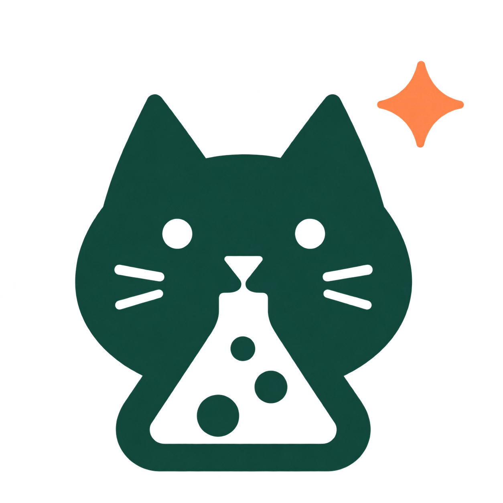

Labcat
Curious. Clever. Companionable.
Opening your research workspace.
Starting the local Docker application and checking that it is ready. This can take up to 90 seconds.
Runs in the operating system's webview.
No Chrome window or separate browser is required.
No Chrome window or separate browser is required.
Start Docker, load the supplied image if needed, then close and reopen
Labcat. You can also run the host launcher with
start --no-open to inspect startup errors.